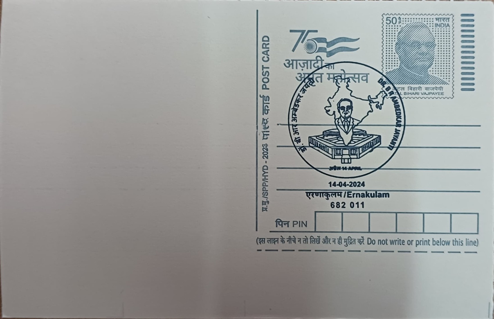

SPECIAL CANCELLATIONS 2024


{kind=link}


{kind=link}


{kind=link}

{kind=link}


{kind=link}


{kind=link}


{kind=link}


{kind=link}


{kind=link}
{kind=link}
{kind=link}
{kind=link}
{kind=link}
{kind=link}
{kind=link}
{kind=link}

{kind=link}


{kind=link}


| S. NO. | DATE OF ISSUE | SPECIAL CANCELLATION | POST OFFICE AND RANK | PINCODE | CIRCLE | IMAGE |
|---|---|---|---|---|---|---|
| 1 | 01.01.2024 | 2024 Happy New Year | Mumbai GPO-PB | 400001 | Maharashtra | |
| 2 | 01.01.2024 | 2024 Happy New Year | Panaji HO-PB | 403001 | Maharashtra | |
| 3 | 01.01.2024 | 2024 Happy New Year | Pune HO-PB | 411001 | Maharashtra | |
| 4 | 01.01.2024 | 2024 Happy New Year | Nashik HO | 422001 | Maharashtra | |
| 5 | 01.01.2024 | 2024 Happy New Year | Aurangabad HO-PB | 430001 | Maharashtra | |
| 6 | 01.01.2024 | 2024 Happy New Year | Nagpur GPO-PB | 440001 | Maharashtra | |
| 7 | 06.01.2024 | Aditya-L1 Reaches Lagrange Point 1 | Mumbai GPO-PB | 400001 | Maharashtra | |
| 8 | 19.01.2024 | NALPEX - 2024 | Nalgonda HO | 508001 | Telangana | |
| 9 | 20.01.2024 | International Decade of Sciences for Sustainable Development | Mumbai GPO-PB | 400001 | Maharashtra | |
| 10 | 20.01.2024 | International Decade of Sciences for Sustainable Development | Panaji HO-PB | 403001 | Maharashtra | |
| 11 | 20.01.2024 | International Decade of Sciences for Sustainable Development | Pune HO-PB | 411001 | Maharashtra | |
| 12 | 20.01.2024 | International Decade of Sciences for Sustainable Development | Nashik HO | 422001 | Maharashtra | |
| 13 | 20.01.2024 | International Decade of Sciences for Sustainable Development | Aurangabad HO-PB | 430001 | Maharashtra | |
| 14 | 20.01.2024 | International Decade of Sciences for Sustainable Development | Nagpur GPO-PB | 440001 | Maharashtra | |
| 15 | 22.01.2024 | Shri Ram Janmabhoomi Temple | Mumbai GPO-PB | 400001 | Maharashtra | |
| 16 | 24.01.2024 | National Girl Child Day | Tiruchirappalli HO | 620001 | Tamil Nadu | |
| 17 | 31.01.2024 | KHELO INDIA Youth Games 2024 | Anna Road HO-PB | 600002 | Tamil Nadu | |
| 18 | 02.02.2024 | World Wetlands Day | Bengaluru GPO-PB | 560001 | Karnataka | |
| 19 | 02.02.2024 | World Wetlands Day | Mysuru HO-PB | 570001 | Karnataka | |
| 20 | 02.02.2024 | World Wetlands Day | Mangaluru HO-PB | 575001 | Karnataka | |
| 21 | 02.02.2024 | World Wetlands Day | Belagavi HO-PB | 590001 | Karnataka | |
| 22 | 12.02.2024 | National Productivity Day | Bengaluru GPO-PB | 560001 | Karnataka | |
| 23 | 12.02.2024 | National Productivity Day | Mysuru HO-PB | 570001 | Karnataka | |
| 24 | 12.02.2024 | National Productivity Day | Mangaluru HO-PB | 575001 | Karnataka | |
| 25 | 12.02.2024 | National Productivity Day | Belagavi HO-PB | 590001 | Karnataka | |
| 26 | 16.02.2024 | EIPA Celebrating 25 Years: State Symbols of Odisha | Bhubaneswar GPO-PB | 751001 | Odisha | |
| 27 | 17.02.2024 | EIPA Celebrating Silver Jubilee: Pride of the Nation | Bhubaneswar GPO-PB | 751001 | Odisha | |
| 28 | 21.02.2024 | International Mother Language Day | Bengaluru GPO-PB | 560001 | Karnataka | |
| 29 | 21.02.2024 | International Mother Language Day | Mysuru HO-PB | 570001 | Karnataka | |
| 30 | 21.02.2024 | International Mother Language Day | Mangaluru HO-PB | 575001 | Karnataka | |
| 31 | 21.02.2024 | International Mother Language Day | Belagavi HO-PB | 590001 | Karnataka | |
| 32 | 21.02.2024 | International Mother Language Day | Anna Road HO-PB, Chennai | 600002 | Tamil Nadu | |
| 33 | 24.02.2024 | Constitution and National Unity Convention: Dr. B. R. Ambedkar | DoP Stall, Palace Grounds, Bengaluru | 560001 | Karnataka | |
| 34 | 25.02.2024 | Constitution and National Unity Convention: Constitution of India | DoP Stall, Palace Grounds, Bengaluru | 560001 | Karnataka | |
| 35 | 27.02.2024 | India Post Tech Logistics Conclave 2024 | Mumbai GPO-PB | 400001 | Maharashtra | |
| 36 | 29.02.2024 | Rare Disease Day | Mumbai GPO-PB | 400001 | Maharashtra | |
| 37 | 29.02.2024 | Rare Disease Day | Panaji HO-PB | 403001 | Maharashtra | |
| 38 | 29.02.2024 | Rare Disease Day | Pune HO-PB | 411001 | Maharashtra | |
| 39 | 29.02.2024 | Rare Disease Day | Nashik HO | 422001 | Maharashtra | |
| 40 | 29.02.2024 | Rare Disease Day | Aurangabad HO-PB | 430001 | Maharashtra | |
| 41 | 29.02.2024 | Rare Disease Day | Nagpur GPO-PB | 440001 | Maharashtra | |
| 42 | 29.02.2024 | Happy Leap Day: One Extra Day, An Extra Smile | Bengaluru GPO-PB | 560001 | Karnataka | |
| 43 | 29.02.2024 | Happy Leap Day: One Extra Day, An Extra Smile | Mysuru HO-PB | 570001 | Karnataka | |
| 44 | 29.02.2024 | Happy Leap Day: One Extra Day, An Extra Smile | Mangaluru HO-PB | 575001 | Karnataka | |
| 45 | 29.02.2024 | Happy Leap Day: One Extra Day, An Extra Smile | Belagavi HO-PB | 590001 | Karnataka | |
| 46 | 29.02.2024 | February 29 2024: Leap Day | Tiruchirappalli HO | 620001 | Tamil Nadu | |
| 47 | 04.03.2024 | National Safety Day | Bengaluru GPO-PB | 560001 | Karnataka | |
| 48 | 04.03.2024 | National Safety Day | Mysuru HO-PB | 570001 | Karnataka | |
| 49 | 04.03.2024 | National Safety Day | Mangaluru HO-PB | 575001 | Karnataka | |
| 50 | 04.03.2024 | National Safety Day | Belagavi HO-PB | 590001 | Karnataka | |
| 51 | 08.03.2024 | Maha Shivratri | Bhavnath SO | 362002 | Gujarat | |
| 52 | 08.03.2024 | Maha Shivratri | Prabhas Patan SO | 362268 | Gujarat | |
| 53 | 08.03.2024 | International Women's Day | Mumbai GPO-PB | 400001 | Maharashtra | |
| 54 | 08.03.2024 | International Women's Day | Panaji HO-PB | 403001 | Maharashtra | |
| 55 | 08.03.2024 | International Women's Day | Pune HO-PB | 411001 | Maharashtra | |
| 56 | 08.03.2024 | International Women's Day | Nashik HO | 422001 | Maharashtra | |
| 57 | 08.03.2024 | International Women's Day | Aurangabad HO-PB | 430001 | Maharashtra | |
| 58 | 08.03.2024 | International Women's Day | Nagpur GPO-PB | 440001 | Maharashtra | |
| 59 | 08.03.2024 | International Women's Day | Bengaluru GPO-PB | 560001 | Karnataka | |
| 60 | 08.03.2024 | International Women's Day | Mysuru HO-PB | 570001 | Karnataka | |
| 61 | 08.03.2024 | International Women's Day | Mangaluru HO-PB | 575001 | Karnataka | |
| 62 | 08.03.2024 | International Women's Day | Belagavi HO-PB | 590001 | Karnataka | |
| 63 | 14.03.2024 | International Day of Action for Rivers | Bengaluru GPO-PB | 560001 | Karnataka | |
| 64 | 14.03.2024 | International Day of Action for Rivers | Mysuru HO-PB | 570001 | Karnataka | |
| 65 | 14.03.2024 | International Day of Action for Rivers | Mangaluru HO-PB | 575001 | Karnataka | |
| 66 | 14.03.2024 | International Day of Action for Rivers | Belagavi HO-PB | 590001 | Karnataka | |
| 67 | 20.03.2024 | World Sparrow Day | Bengaluru GPO-PB | 560001 | Karnataka | |
| 68 | 20.03.2024 | World Sparrow Day | Mysuru HO-PB | 570001 | Karnataka | |
| 69 | 20.03.2024 | World Sparrow Day | Mangaluru HO-PB | 575001 | Karnataka | |
| 70 | 20.03.2024 | World Sparrow Day | Belagavi HO-PB | 590001 | Karnataka | |
| 71 | 22.03.2024 | World Water Day: Water For Peace | Mumbai GPO-PB | 400001 | Maharashtra | |
| 72 | 22.03.2024 | World Water Day: Water For Peace | Panaji HO-PB | 403001 | Maharashtra | |
| 73 | 22.03.2024 | World Water Day: Water For Peace | Pune HO-PB | 411001 | Maharashtra | |
| 74 | 22.03.2024 | World Water Day: Water For Peace | Nashik HO | 422001 | Maharashtra | |
| 75 | 22.03.2024 | World Water Day: Water For Peace | Aurangabad HO-PB | 430001 | Maharashtra | |
| 76 | 22.03.2024 | World Water Day: Water For Peace | Nagpur GPO-PB | 440001 | Maharashtra | |
| 77 | 25.03.2024 | Holi - Festival of Natural Colours | Bengaluru GPO-PB | 560001 | Karnataka | |
| 78 | 25.03.2024 | Holi - Festival of Natural Colours | Mysuru HO-PB | 570001 | Karnataka | |
| 79 | 25.03.2024 | Holi - Festival of Natural Colours | Mangaluru HO-PB | 575001 | Karnataka | |
| 80 | 25.03.2024 | Holi - Festival of Natural Colours | Belagavi HO-PB | 590001 | Karnataka | |
| 81 | 02.04.2024 | World Autism Awareness Day | Bengaluru GPO-PB | 560001 | Karnataka | |
| 82 | 02.04.2024 | World Autism Awareness Day | Mysuru HO-PB | 570001 | Karnataka | |
| 83 | 02.04.2024 | World Autism Awareness Day | Mangaluru HO-PB | 575001 | Karnataka | |
| 84 | 02.04.2024 | World Autism Awareness Day | Belagavi HO-PB | 590001 | Karnataka | |
| 85 | 05.04.2024 | National Maritime Day 2024 | Kozhikode HO | 673001 | Kerala | |
| 86 | 05.04.2024 | National Maritime Day 2024 | Thrissur HO | 680001 | Kerala | |
| 87 | 05.04.2024 | National Maritime Day 2024 | Ernakulam HO | 682001 | Kerala | |
| 88 | 05.04.2024 | National Maritime Day 2024 | Thiruvananthapuram GPO | 695001 | Kerala | |
| 89 | 14.04.2024 | Dr. B. R. Ambedkar Jayanti | Kozhikode HO | 673001 | Kerala | |
| 90 | 14.04.2024 | Dr. B. R. Ambedkar Jayanti | Thrissur HO | 680001 | Kerala | |
| 91 | 14.04.2024 | Dr. B. R. Ambedkar Jayanti | Ernakulam HO | 682001 | Kerala |  |
| 92 | 14.04.2024 | Dr. B. R. Ambedkar Jayanti | Thiruvananthapuram GPO | 695001 | Kerala | |
| 93 | 14.04.2024 | Happy Vishu | Kozhikode HO | 673001 | Kerala | |
| 94 | 14.04.2024 | Happy Vishu | Thrissur HO | 680001 | Kerala | |
| 95 | 14.04.2024 | Happy Vishu | Ernakulam HO | 682001 | Kerala | |
| 96 | 14.04.2024 | Happy Vishu | Thiruvananthapuram GPO | 695001 | Kerala | |
| 97 | 18.04.2024 | World Heritage Day: Dandppatta - State Weapon of Maharashtra | Mumbai GPO-PB | 400001 | Maharashtra | |
| 98 | 18.04.2024 | World Heritage Day: Dandppatta - State Weapon of Maharashtra | Pune HO-PB | 411001 | Maharashtra | |
| 99 | 18.04.2024 | World Heritage Day: Dandppatta - State Weapon of Maharashtra | Nashik HO | 422001 | Maharashtra | |
| 100 | 18.04.2024 | World Heritage Day: Dandppatta - State Weapon of Maharashtra | Aurangabad HO-PB | 430001 | Maharashtra | |
| 101 | 18.04.2024 | World Heritage Day: Dandppatta - State Weapon of Maharashtra | Nagpur GPO-PB | 440001 | Maharashtra | |
| 102 | 18.04.2024 | World Heritage Day | Bengaluru GPO-PB | 560001 | Karnataka | |
| 103 | 18.04.2024 | World Heritage Day | Mysuru HO-PB | 570001 | Karnataka | |
| 104 | 18.04.2024 | World Heritage Day | Mangaluru HO-PB | 575001 | Karnataka | |
| 105 | 18.04.2024 | World Heritage Day | Belagavi HO-PB | 590001 | Karnataka | |
| 106 | 22.04.2024 | World Earth Day | Bengaluru GPO-PB | 560001 | Karnataka | |
| 107 | 22.04.2024 | World Earth Day | Mysuru HO-PB | 570001 | Karnataka | |
| 108 | 22.04.2024 | World Earth Day | Mangaluru HO-PB | 575001 | Karnataka | |
| 109 | 22.04.2024 | World Earth Day | Belagavi HO-PB | 590001 | Karnataka | |
| 110 | 25.04.2024 | World Malaria Day | Bengaluru GPO-PB | 560001 | Karnataka | |
| 111 | 25.04.2024 | World Malaria Day | Mysuru HO-PB | 570001 | Karnataka | |
| 112 | 25.04.2024 | World Malaria Day | Mangaluru HO-PB | 575001 | Karnataka | |
| 113 | 25.04.2024 | World Malaria Day | Belagavi HO-PB | 590001 | Karnataka | |
| 114 | 01.05.2024 | Maharashtra Day | Mumbai GPO-PB | 400001 | Maharashtra | |
| 115 | 01.05.2024 | Maharashtra Day | Pune HO-PB | 411001 | Maharashtra | |
| 116 | 01.05.2024 | Maharashtra Day | Nashik HO | 422001 | Maharashtra | |
| 117 | 01.05.2024 | Maharashtra Day | Aurangabad HO-PB | 430001 | Maharashtra | |
| 118 | 01.05.2024 | Maharashtra Day | Nagpur GPO-PB | 440001 | Maharashtra | |
| 119 | 08.05.2024 | World Red Cross Day | Bengaluru GPO-PB | 560001 | Karnataka | |
| 120 | 08.05.2024 | World Red Cross Day | Mysuru HO-PB | 570001 | Karnataka | |
| 121 | 08.05.2024 | World Red Cross Day | Mangaluru HO-PB | 575001 | Karnataka | |
| 122 | 08.05.2024 | World Red Cross Day | Belagavi HO-PB | 590001 | Karnataka | |
| 123 | 15.05.2024 | International Day of Families | Bengaluru GPO-PB | 560001 | Karnataka | |
| 124 | 15.05.2024 | International Day of Families | Mysuru HO-PB | 570001 | Karnataka | |
| 125 | 15.05.2024 | International Day of Families | Mangaluru HO-PB | 575001 | Karnataka | |
| 126 | 15.05.2024 | International Day of Families | Belagavi HO-PB | 590001 | Karnataka | |
| 127 | 15.05.2024 | 36th International Day of Families | Kozhikode HO | 673001 | Kerala | |
| 128 | 15.05.2024 | 37th International Day of Families | Thrissur HO | 680001 | Kerala | |
| 129 | 15.05.2024 | 38th International Day of Families | Ernakulam HO | 682001 | Kerala | |
| 130 | 15.05.2024 | 39th International Day of Families | Thiruvananthapuram GPO | 695001 | Kerala | |
| 131 | 17.05.2024 | World Telecommunications Day | Bengaluru GPO-PB | 560001 | Karnataka | |
| 132 | 17.05.2024 | World Telecommunications Day | Mysuru HO-PB | 570001 | Karnataka | |
| 133 | 17.05.2024 | World Telecommunications Day | Mangaluru HO-PB | 575001 | Karnataka | |
| 134 | 17.05.2024 | World Telecommunications Day | Belagavi HO-PB | 590001 | Karnataka | |
| 135 | 20.05.2024 | World Bee Day | Mumbai GPO-PB | 400001 | Maharashtra | |
| 136 | 20.05.2024 | World Bee Day | Panaji HO-PB | 403001 | Maharashtra | |
| 137 | 20.05.2024 | World Bee Day | Pune HO-PB | 411001 | Maharashtra | |
| 138 | 20.05.2024 | World Bee Day | Nashik HO | 422001 | Maharashtra | |
| 139 | 20.05.2024 | World Bee Day | Aurangabad HO-PB | 430001 | Maharashtra | |
| 140 | 20.05.2024 | World Bee Day | Nagpur GPO-PB | 440001 | Maharashtra | |
| 141 | 22.05.2024 | International Day For Biodiversity | Mumbai GPO-PB | 400001 | Maharashtra | |
| 142 | 22.05.2024 | International Day For Biodiversity | Panaji HO-PB | 403001 | Maharashtra | |
| 143 | 22.05.2024 | International Day For Biodiversity | Pune HO-PB | 411001 | Maharashtra | |
| 144 | 22.05.2024 | International Day For Biodiversity | Nashik HO | 422001 | Maharashtra | |
| 145 | 22.05.2024 | International Day For Biodiversity | Aurangabad HO-PB | 430001 | Maharashtra | |
| 146 | 22.05.2024 | International Day For Biodiversity | Nagpur GPO-PB | 440001 | Maharashtra | |
| 147 | 31.05.2024 | No - Tobacco Day | Patna GPO-PB | 800001 | Bihar | |
| 148 | 05.06.2024 | World Environment Day | Bengaluru GPO-PB | 560001 | Karnataka | |
| 149 | 05.06.2024 | World Environment Day | Mysuru HO-PB | 570001 | Karnataka | |
| 150 | 05.06.2024 | World Environment Day | Mangaluru HO-PB | 575001 | Karnataka | |
| 151 | 05.06.2024 | World Environment Day | Belagavi HO-PB | 590001 | Karnataka | |
| 152 | 05.06.2024 | World Environment Day | Kozhikode HO | 673001 | Kerala | |
| 153 | 05.06.2024 | World Environment Day | Thrissur HO | 680001 | Kerala | |
| 154 | 05.06.2024 | World Environment Day | Ernakulam HO | 682001 | Kerala | |
| 155 | 05.06.2024 | World Environment Day | Thiruvananthapuram GPO | 695001 | Kerala | |